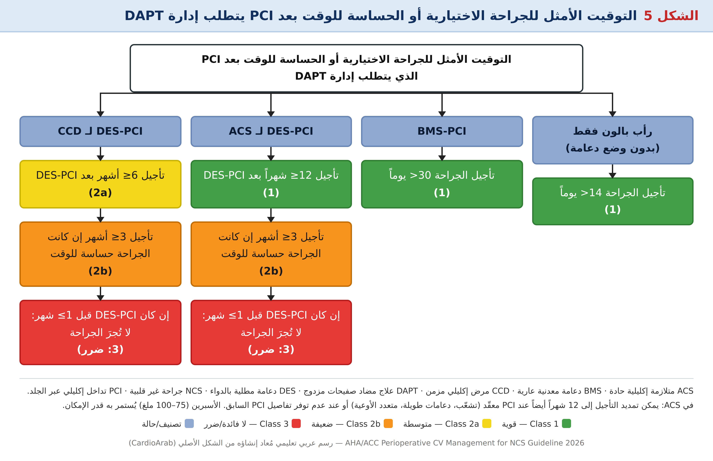

الستاتينات (7.1)
الستاتينات آمنة في الفترة المحيطة بالجراحة وقد تقلل الأحداث القلبية الوعائية خصوصاً في جراحة الأوعية الكبرى. لكن فائدة البدء الروتيني عند غير الأوعية غير مؤكدة (بيانات رصدية قوية تقابلها RCT أصغر لكنها أدق: تجربة LOAD — 648 مريضاً، atorvastatin بجرعة تحميل — لم تُظهر فائدة).
• تجربة صغيرة: atorvastatin عند LDL ≥100 ملغ/دل → المركّب (وفاة قلبية، MI، سكتة، ذبحة غير مستقرة) عند 6 أشهر: 8.0% مقابل 26% للدواء الوهمي (P=0.031).
• بحاجة لـ RCTs في الجراحات منخفضة الخطورة وتحديد التوقيت والجرعة وإعادة التحميل (reloading).
مثبطات RAAS وCCB وناهضات ألفا-2 (7.2–7.4)
ACEi/ARB واسعة الاستعمال، لكن التجارب التي قارنت الإيقاف بالاستمرار شملت مرضى منخفضي-متوسطي الخطر، وغالباً استُثني ذوو SBP >160 أو <105 ومرضى HFrEF.
* مرضى ضغطهم مضبوط ومرشحون لجراحة عالية الخطورة. † معدَّلة من إرشاد HF 2022 AHA/ACC/HFSA.
| الدراسة / الدليل | النتيجة |
|---|---|
| RCTs العامة | الاستمرار ↔ هبوط ضغط أثناء الجراحة (MAP <60) أكثر؛ لكن بلا نتائج سريرية أسوأ (مثلاً MINS) |
| PREOP-ACEI (ACEi مستقر ≥6 أسابيع، جراحة غير قلبية/غير وعائية كبرى) | إيقاف آخر جرعة ↔ أقل أحداث SBP <80؛ لا فرق في MACE ولا PACU ولا الإقامة |
| تحليل تجميعي (6022 مريضاً) | الاستمرار ↔ هبوط ضغط أكثر؛ لا إضرار بالنتائج |
| POISE-3 (استراتيجيات ضغط) | 72% في كلا الذراعين على ACEi/ARB؛ لا أحداث سلبية زائدة عند استمرار الأدوية صباح الجراحة |
| HF | تجارب الإيقاف استثنت إلى حدٍّ كبير HF المتوسط-الشديد؛ تحليل 2018: دراسة واحدة فقط تقيس HF |
| ARNI (sacubitril/valsartan) | لا بيانات (ضرر أو فائدة) |
حاصرات قنوات الكالسيوم (7.3 — بلا توصية)
تحليل 11 تجربة (1007 مريضاً، أغلبها diltiazem/verapamil وريدي): لم يقلل الوفيات ولا MI منفردين، لكنه خفّض المركّب (MI+وفاة) وSVT بعد الجراحة؛ مع هبوط ضغط وبطء قلب في بعض الدراسات. لا فائدة من البدء بها محيطياً، والاستمرار قد يكون معقولاً مع الانتباه لهبوط الضغط (DHP) وبطء القلب (غير DHP).
ناهضات ألفا-2 (7.4)
استمرار ناهضات ألفا-2 المزمنة لم يُدرس في RCTs.
مضادات الصفيحات وتوقيت الجراحة بعد PCI (7.5)
قرار مضادات الصفيحات وتوقيت الجراحة بعد PCI من أعقد قرارات الغايدلاين: تُوازن مخاطر الخثار (خثار الدعامة) مقابل النزف وتأخير الجراحة. خطر خثار الدعامة المحيط بالجراحة الأعلى في أول 4–6 أسابيع بعد PCI ويتناقص لكنه يستمر حتى 6 أشهر.
* قد يُنظر في P2Y12 كعلاج منفرد إن كان خطر النزف الجراحي مقبولاً أو لم يُحتمل الأسبرين.
الشكل 5 — التوقيت الأمثل للجراحة الاختيارية/الحساسة للوقت بعد PCI

| نمط PCI | الجراحة الاختيارية | الجراحة الحساسة للوقت | ≤1 شهر |
|---|---|---|---|
| رأب بالون دون دعامة | تأجيل >14 يوماً 1 | — | — |
| BMS | تأجيل >30 يوماً 1 | — | — |
| DES لـ ACS | ≥12 شهراً 1 | ≥3 أشهر 2b | لا جراحة 3: ضرر |
| DES لـ CCD | ≥6 أشهر 2a | ≥3 أشهر 2b | لا جراحة 3: ضرر |
• PCI لـ MI ↔ خطر MACE بعد الجراحة ≈3 أضعاف مقابل CCD.
• ينبغي تمديد الانتظار إلى 12 شهراً عند PCI معقّد (تشعّب، دعامات طويلة، متعدد الأوعية) أو تفاصيل غير متوفرة.
• VA (مطابَق): MACE الأعلى في أول 6 أشهر ثم يستقر ≈1%. تحليل 221,379 قبولاً: خلال 6 أشهر من PCI — MI 4.7%، نزف 32%، وفيات 4.4%.
• بعد BMS: MACE 2.8% عند >3 أشهر مقابل 10.5% عند <30 يوماً. وبعد DES أقل ما يكون عند >3 أشهر.
• كندا (≈8000): MACE بعد >6 أشهر من DES = 1.2% (قريب من متوسطي الخطر بلا PCI).
• نوع الدعامة: لم يُرتبط بـ MACE عند 6 أشهر في كوهورت كبير؛ لكن سجلاً (≈40,000) وجد DES القديم أعلى خطراً في أي نقطة زمنية.
• إن لزم جراحة عاجلة بإيقاف DAPT: قد يُنظر رأب بالون دون دعامات مع تأجيل ≥14 يوماً.
• الأسبرين للوقاية الأولية: انخفض استعماله؛ لا حاجة لفريق متعدد التخصصات عند إيقافه.
Table 12 — أمد تأثير مضادات الصفيحات
| الدواء | أقل زمن من الإيقاف حتى استعادة وظيفة الصفيحات |
|---|---|
| الأسبرين | 4 أيام |
| Clopidogrel | 5–7 أيام |
| Prasugrel | 7–10 أيام |
| Ticagrelor | 3–5 أيام |
تُوجَّه الأزمنة الدنيا بالحرائك الدوائية وعودة وظيفة الصفيحات والنشرة الدوائية لـ FDA.
مضادات التخثر الفموية (7.6)
مبدأ الغايدلاين: إيقاف زمني بنهج فريق، والجسر انتقائي جداً. الإيقاف يُبنى على خطر الخثار وعمر المريض وجنسه ووزنه وتصفية الكلية، وخطر النزف الجراحي، وصفات الدواء. وفي بعض مرضى الخثار الحديث عالي الخطر قد يتيح تأجيل الجراحة الاختيارية إيقافاً أكثر أماناً.
* يعتمد توقيت الإيقاف على عوامل المريض والجراحة والدواء.
تعريف خطر النزف الجراحي
| الفئة | خطر نزف كبير خلال 30 يوماً | أمثلة |
|---|---|---|
| أدنى (Minimal) | 0% | جراحة الساد، طب أسنان/جلدية بسيطة |
| منخفض/متوسط | <2% | أسنان معقدة، جهاز هضمي، ثدي، إجراءات بإبر كبيرة |
| مرتفع | ≥2% | — |
الإجراءات ذات العواقب الأسوأ عند النزف (مثل التخدير neuraxial) تتطلب إيقافاً كاملاً.
Table 13 — جدول إيقاف/استئناف DOACs وVKA (يوم 0 = يوم الجراحة)
✔ = يُعطى · ✖ = يُحجب · B = حجب VKA مع جسر هيبارين (خطر خثار شديد جداً) · ✔* = استئناف مع قرار فريقي بشأن جسر LMWH.
Apixaban / Edoxaban / Rivaroxaban
| الدواء / الخطر | -6 | -5 | -4 | -3 | -2 | -1 | 0 | +1 | +2 | +3 | +4 |
|---|---|---|---|---|---|---|---|---|---|---|---|
| مرتفع — كلية طبيعية | ✔ | ✔ | ✔ | ✔ | ✖ | ✖ | ✖ | ✖ | ✖ | ✔ | ✔ |
| منخفض/متوسط — كلية طبيعية | ✔ | ✔ | ✔ | ✔ | ✔ | ✖ | ✖ | ✔ | ✔ | ✔ | ✔ |
| أدنى | ✔ | ✔ | ✔ | ✔ | ✔ | ✔ | ✔ | ✔ | ✔ | ✔ | ✔ |
| مرتفع — CrCl <30 | ✔ | ✔ | ✔ | ✖ | ✖ | ✖ | ✖ | ✖ | ✖ | ✔ | ✔ |
| منخفض/متوسط — CrCl <30 | ✔ | ✔ | ✔ | ✔ | ✖ | ✖ | ✖ | ✔ | ✔ | ✔ | ✔ |
Dabigatran
| الدواء / الخطر | -6 | -5 | -4 | -3 | -2 | -1 | 0 | +1 | +2 | +3 | +4 |
|---|---|---|---|---|---|---|---|---|---|---|---|
| مرتفع — CrCl ≥50 | ✔ | ✔ | ✔ | ✔ | ✖ | ✖ | ✖ | ✖ | ✖ | ✔ | ✔ |
| منخفض/متوسط — CrCl ≥50 | ✔ | ✔ | ✔ | ✔ | ✔ | ✖ | ✖ | ✔ | ✔ | ✔ | ✔ |
| مرتفع — CrCl <50 | ✔ | ✔ | ✖ | ✖ | ✖ | ✖ | ✖ | ✖ | ✖ | ✔ | ✔ |
| منخفض/متوسط — CrCl <50 | ✔ | ✔ | ✔ | ✔ | ✖ | ✖ | ✖ | ✔ | ✔ | ✔ | ✔ |
| أدنى (أياً كانت الكلية) | ✔ | ✔ | ✔ | ✔ | ✔ | ✔ | ✔ | ✔ | ✔ | ✔ | ✔ |
Warfarin (VKA)
| الدواء / الخطر | -6 | -5 | -4 | -3 | -2 | -1 | 0 | +1 | +2 | +3 | +4 |
|---|---|---|---|---|---|---|---|---|---|---|---|
| خطر خثار منخفض/متوسط — نزف مرتفع أو منخفض/متوسط | ✔ | ✖ | ✖ | ✖ | ✖ | ✖ | ✖ | ✔ | ✔ | ✔ | ✔ |
| خطر خثار مرتفع — نزف مرتفع | ✔ | ✖ | ✖ | B | B | B | ✖ | ✔ | ✔ | ✔* | ✔* |
| خطر خثار مرتفع — نزف منخفض/متوسط | ✔ | ✖ | ✖ | B | B | B | ✖ | ✔ | ✔* | ✔* | ✔* |
| أدنى (أياً كان الخطر الخثري) | ✔ | ✔ | ✔ | ✔ | ✔ | ✔ | ✔ | ✔ | ✔ | ✔ | ✔ |
B في أيام −3 إلى −1: يُحجب VKA مع جسر بهيبارين حقني بعد انخفاض INR عن المدى العلاجي المطلوب (فقط عند خطر خثار شديد جداً). بعد الجراحة: استئناف جسر LMWH بجرعة كاملة أو وقائية حتى يبلغ INR المدى هو قرار فريقي. (قراءتي للجدول 13: تحقق من الأصل عند التطبيق السريري.)
Table 14 — الخطر الخثري حسب الاستطباب
| الخطر | VTE | AF | صمام ميكانيكي | أخرى |
|---|---|---|---|---|
| منخفض | VTE قبل >12 شهراً (بلا قصة سابقة) | CHA₂DS₂-VASc 1–4 (بلا سكتة) | Bileaflet AVR بلا عوامل خطر سكتة كبرى* | — |
| متوسط | VTE ≤3–12 شهراً؛ VTE متكرر؛ سرطان نشط | CHA₂DS₂-VASc 5–6 | Bileaflet AVR مع عوامل خطر سكتة كبرى* | اضطراب تخثر غير شديد (heterozygous FVL/prothrombin G20210A) |
| مرتفع | VTE حديث (<1 شهر أو <3 أشهر) | CHA₂DS₂-VASc ≥7 (أو 5–6 مع سكتة/TIA حديثة)؛ AF مع مرض صمامي روماتيزمي | صمام تاجي ميكانيكي؛ caged-ball/tilting-disk؛ أي صمام ميكانيكي مع سكتة/TIA <3 أشهر | سكتة قلبية المنشأ <3 أشهر؛ سرطان عالي خطر VTE؛ خثرة LV خلال 3 أشهر؛ ثرومبوفيليا شديدة؛ أضداد الفوسفوليبيد |
* عوامل خطر السكتة الكبرى: AF، سكتات/TIA متعددة (≥3 أشهر)، سكتة محيطة بالجراحة سابقة، خثار صمام سابق.
Table 15 — الحرائك الدوائية والعكس
| Warfarin | Apixaban | Rivaroxaban | Edoxaban | Dabigatran | |
|---|---|---|---|---|---|
| آلية الفعل | VKORC1 (عوامل معتمدة على فيتامين K) | مثبّط عامل Xa | مثبّط عامل Xa | مثبّط عامل Xa | مثبّط عامل IIa (مثبّط الثرومبين المباشر) |
| التوافر الحيوي | >95% | 50% | 100% (66% دون طعام) | 62% | 3–7% |
| الذروة Tmax | 2–6 س | 3–4 س | 2–4 س | 1–2 س | 1.25–3 س |
| نصف العمر (t½) | 36–48 س | 9–14 س | 6–9 س (11–13 س عند المسنين) | 10–14 س | 12–15 س |
| مدة الفعل | ≈5 أيام (بعد تطبّع INR) | 24 س | 24 س | 24 س | 24 س |
| التصفية الكلوية | 0% | 27% | 33% | 37–59% | 85% (يُزال جزئياً بالديلزة) |
| التداخلات الدوائية | — | CYP 3A4، p-glycoprotein | CYP 3A4/2J2، p-glycoprotein | CYP 3A4 (<5%)، p-glycoprotein | p-glycoprotein |
| معاملات التخثر المتأثرة | — | PT، aPTT، ACT | PT، aPTT، ACT | PT، aPTT، ACT | aPTT، ACT، PT/INR، DTT |
| مراقبة وجود الأثر الدوائي | PT/INR | Anti-Xa* (DOAC) | Anti-Xa* (DOAC) | Anti-Xa* (DOAC) | ECT (DOAC) |
| الترياق/العكس | Vitamin K، 4F-PCC، FFP | 4F-PCC، andexanet alfa | 4F-PCC، andexanet alfa | 4F-PCC، andexanet alfa | 4F-PCC، idarucizumab |
* التقدير الكمّي يحتاج معايِرات خاصة بالدواء؛ وعند غياب المستويات العلاجية يدل وجود النتيجة على أثر دوائي مستمر. الاختصارات: 4F-PCC مركّب البروثرومبين رباعي العوامل؛ DTT زمن الثرومبين المخفَّف؛ ECT زمن تخثر الإيكارين.
• BRIDGE (1844 مريض AF على VKA): الجسر غير أدنى من الوهمي للصمة لكنه رفع النزف الكبير. PERIOP-2 (1471): الجسر بعد الجراحة لم يخفض الخثار وزاد النزف. PAUSE / EMIT-AF/VTE: إيقاف DOAC بسيط بلا جسر = نزف وخثار منخفضان.
• الجسر يُحصر عملياً في خطر خثار شديد جداً (مثل الصمام التاجي الميكانيكي) بعد تقدير النزف (HAS-BLED، قصة نزف، خطر الجراحة).
• الاستئناف: VKA بعد 12–24 ساعة عند الإرقاء (بجرعة سابقة وبمراقبة INR لتداخل الأدوية)؛ DOAC حين يناسب التمييع الكامل — حتى 6 ساعات بعد الجراحة إن تحقق الإرقاء، وفي PAUSE بعد 48–72 ساعة في الجراحة عالية النزف.
• العكس السريع: PCC، andexanet (مثبطات Xa)، idarucizumab (dabigatran)؛ قد لا يلزم إن لم توجد قياسات تخثر مضطربة أو مستويات دواء.
حاصرات بيتا (7.7)
التفاؤل الأولي بحاصرات بيتا للحماية المحيطة بالجراحة خفّفته تجارب كبيرة (POISE): فائدة متوسطة في الإقفار والاضطراب الأذيني قابلتها أضرار (سكتة، هبوط ضغط) وزيادة وفيات. وعليه: لا يُنصح بحاصرات بيتا كإجراء وقائي محيط بالجراحة.
• POISE: البدء يوم الجراحة بجرعات عالية ضار.
• كوهورت كبير: البدء قبل <7 أيام من الجراحة ↔ وفيات أعلى مقابل البدء قبل >31 يوماً؛ البدء قبل 8–30 يوماً لا زيادة وفيات ولا فائدة.
• الاستراتيجية المثلى: حصر الاستعمال بمن لديه استطباب واضح، البدء قبل أسبوع على الأقل، تعديلها بحسب الهيموديناميكا، والمتابعة عند الخروج.
• مؤشرات RCRI قد تحدد من يستفيد (بيانات رصدية) لكنها لم تُثبَّت بتجارب.
تدبير السكر (7.8)
34.1 مليون بالغ أمريكي مصاب بالسكري (13%) و7.3 مليون غير مشخَّصين؛ وحتى 20% من مرضى الجراحة العامة سكريون و23–60% لديهم مقدمات سكري أو سكري غير مشخّص. سكر ≥200 ملغ/دل قبل الجراحة ارتبط بوفيات كلية ×2 ووفيات قلبية ×4.
* canagliflozin وdapagliflozin وempagliflozin ≥3 أيام؛ ertugliflozin ≥4 أيام.
| الموضوع | التفصيل |
|---|---|
| HbA1c | قد يكون معقولاً تأجيل جراحة اختيارية إن كان HbA1c >8% (لا عتبات معتمدة)؛ ولا يؤخَّر الإسعافي أو الحساس للوقت لبلوغ هدف HbA1c |
| SGLT2i | الحماض الكيتوني السوي السكر: سكر <250 + pH <7.3 + بيكربونات <18 + كيتونات؛ أُوقِف 3–4 أيام قبل الجراحة؛ يُستأنف حين يستقر المريض ويعود لتغذية طبيعية |
| الميتفورمين | المخاوف السابقة (الحماض اللبني) لم تؤكدها بيانات حديثة: كوهورت >10,600 مريضاً لم يربط الاستعمال الحالي بخطر الحماض اللبني. UKPDS: ↓32% نقاط نهائية السكري، ↓42% وفاة مرتبطة بالسكري، ↓36% وفاة كلية |
| GLP-1 RAs | بيان ASA: الصيغ الأسبوعية تُوقف ≥1 أسبوع قبل الجراحة الاختيارية، واليومية يوماً قبلها (لتقليل خطر الاستنشاق بسبب تأخر التفريغ المعدي) |
جدول مختصر وخلاصة الجزء الرابع
| الدواء | الإجراء المحيط بالجراحة | COR |
|---|---|---|
| ستاتين | استمرار؛ بدء عند الاستطباب | 1 |
| ACEi/ARB لـ HTN | قد يُحجب 24 ساعة (ضغط مضبوط، جراحة عالية الخطورة) | 2b |
| ACEi/ARB لـ HFrEF | استمرار | 2a |
| CCB | لا توصية (الاستمرار قد يكون معقولاً) | — |
| Clonidine | لا تبدأ به | 3: لا فائدة |
| أسبرين بعد PCI | استمرار 75–100 ملغ | 1 |
| P2Y12 بعد PCI | حسب Figure 5 وTable 12 | 1 / 2a / 2b / 3 |
| OAC | إيقاف زمني (Table 13) + استئناف بعد الإرقاء | 1 / 2a |
| Bridging | انتقائي (خطر خثري شديد جداً) | 2a؛ روتينياً 3: ضرر |
| حاصرات بيتا | استمرار؛ لا تبدأ يوم الجراحة | 1 / 3: ضرر |
| SGLT2i | إيقاف 3–4 أيام | 1 |
| الميتفورمين | استمرار | 2a |
| GLP-1 | أسبوعي ≥1 أسبوع، يومي يوماً قبل (ASA) | — |
🔑 أبرز نقاط الجزء الرابع
- الستاتين: استمرار + بدء عند الاستطباب (Class 1)؛ لا تؤخر الجراحة لقياس LDL
- ACEi/ARB: الاستمرار في HFrEF؛ قد يُحجب 24 ساعة في HTN (2b)
- لا تبدأ clonidine ولا حاصر بيتا يوم الجراحة
- بعد PCI: بالون >14 يوماً، BMS >30 يوماً، DES لـ ACS ≥12 شهراً، DES لـ CCD ≥6 أشهر، حساس للوقت ≥3 أشهر، ≤1 شهر = ضرر
- استمرار الأسبرين 75–100 ملغ بعد PCI؛ استبداله عند إيقاف OAC المنفرد
- OAC: إيقاف زمني بفريق، الجسر روتينياً Class 3: ضرر، واستئناف بعد الإرقاء (VKA 12–24 س، DOAC حتى 6 س / 48–72 س بعد الجراحة عالية النزف)
- السكري: SGLT2i 3–4 أيام، الميتفورمين يستمر، HbA1c >8% قد يستدعي التأجيل